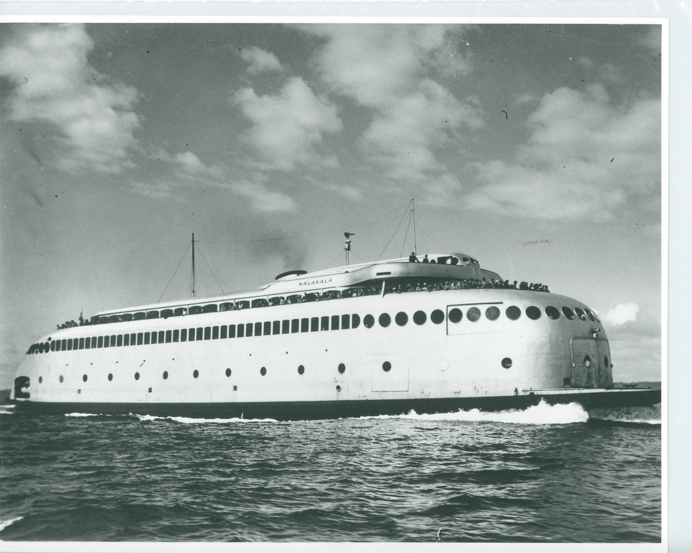

The Kalakala
Designed as a futuristic, streamlined vessel, the Kalakala was launched in 1935 on the Seattle-Bremerton run. Boasting 97.75% steel construction, she appeared sleek but a ride on the Kalakala was anything but smooth.

By 1967, burning 300,000 gallons of fuel every
7 days of operation, she became too expensive
to maintain and her run ended. She was sold
for use as an Alaskan seafood processing
plant.
In 1985, Seattle sculptor Peter Bevis noticed
the Kalakala while on a fishing trip. He began
work to return the vessel to Puget Sound. In
1991, he founded the Kalakala Foundation
and raised funds for her return.
He purchased the vessel in 1998 and had her towed back to Washington. He continued fundraising efforts to restore the vessel, but was ultimately unsuccessful. She was scrapped in 2015.